|
CUBE REVOLUTIONS: GENERACIÓN AUTOMÁTICA DE MOVIMIENTO |
Introducción
En este nivel se resuelven los siguientes problemas:
¿Cómo coordinar las articulaciones para que el robot ande?
¿Cómo generar automáticamente las secuencias de movimiento?
¿Cómo controlar el tipo de movimiento y su velocidad?
Coordinación de las articulaciones
Uno de los problemas de los robots tipo gusano es que para conseguir que se desplacen, las articulaciones tienen que estar muy bien coordinadas. Si uno intenta generar secuencias de movimiento manuales para mover un gusano de 8 articulaciones, como Cube Revolutions, comprobará que es bastante complicado.
Una solución es utilizar un modelo de propagación de ondas, de forma que el cuerpo del gusano se comporte como un elemento pasivo sobre el que se propagan ondas. Sería muy parecido a tener unas boyas unidas por un segmento fijo flotando en la superficie del mar o un lago. Al pasar las “olas”, este sistema cambiará de forma:
|
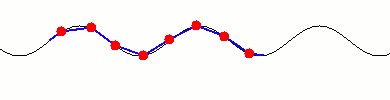 |
Generación automática de las secuencias de movimiento
La generación de las secuencias se hace de la siguiente manera:
Mediante el algoritmo de ajuste, se hace que todas las articulaciones del gusano se sitúen sobre la onda, obteniéndose el vector de posición angular (que contiene los ángulos de todas las articulaciones en ese instante).
|
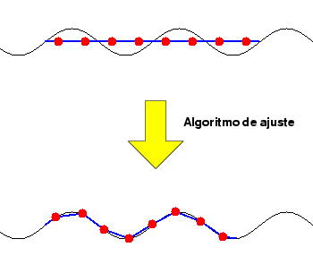
|
Se desplaza la onda y se vuelve a ajustar el gusano: obteniéndose el siguiente vector de posición angular
|
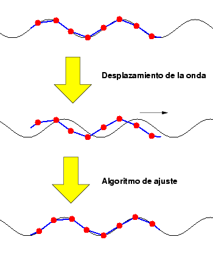 |
Se repite el ciclo desplazamiento-ajuste hasta que la onda haya recorrido una distancia igual a su longitud de onda. Los vectores de posición angular obtenidos durante el proceso forman la matriz de movimiento, que se puede grabar en un fichero .f8 para luego reproducir la secuencia en el robot. Si se representa en pantalla esta secuencia generada, quedaría así:
|
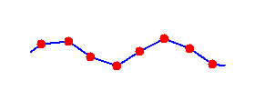 |
La clave de la generación de secuencias de movimiento es el algoritmo de ajuste. Para más información consultar:
Parte I: Teoría de Gusanos. En la página 86 está descrito el algoritmo de ajuste.
Control del tipo de movimiento
El algoritmo empleado para la generación de las secuencias de movimiento es totalmente independiente de la onda empleada: funciona igual tanto si son ondas sinusoidales como si son triangulares o de cualquier otro tipo. El proceso de generación es el mismo.
|
Las características del movimiento están determinadas por la ONDA empleada y los parámetros de dicha onda: Amplitud, longitud de onda, frecuencia, fase, etc. |
La selección de la onda determina el tipo de movimiento del robot. Así por ejemplo, una onda sinusoidal genera un movimiento más continuo y uniforme que una semionda. Pero esta última hace que el movimiento sea más estable, puesto que hay mayor número de puntos de contacto con la superficie. Sería un movimiento mejor para trepar por superficies inclinadas.
Para una misma onda empleada, por ejemplo sinusoidal, se pueden variar sus diferentes parámetros: amplitud, longitud de onda, etc. Existen, por tanto, infinitos movimientos posibles.
En Cube Revolutions están implementados los mecanismos para que se pueda mover de estas diferentes maneras, sin embargo, todavía no se ha hecho un estudio en profundidad sobre las características del movimiento en función de las ondas empledas y de sus parámetros.
Los experimentos muestran que la velocidad de desplazamiento es mayor cuanto mayor es la amplitud de la onda.
En la tabla inferior se pueden ver diferentes ondas empleadas y una animación del movimiento que producen. En los dos primeros casos se está empleando una onda sinusoidal, cada una con una amplitud diferente. Un amplitud pequeña hace que el robot avance más despacio y le permitiría pasar por debajo de obstáculos de poca altura o moverse por el interior de un tubo. Una amplitud mayor hace que el robot avance más deprisa y podría además pasar por encima de pequeños “escalones”.
En el tercer caso se está usando una semionda. Esta es quizás la forma más parecida a como se mueven los gusanos de seda. El movimiento es más estable: hay un mayor número de puntos de contactos con el suelo.
El último caso es un ejemplo de una onda creada mediante la superposición de dos ondas sinusoidales.
|
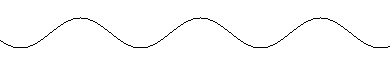 |
|
|---|---|
|
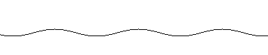 |
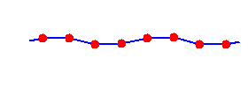 |
|
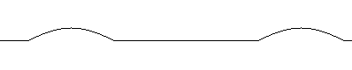 |
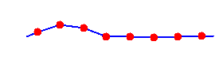 |
|
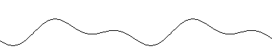 |
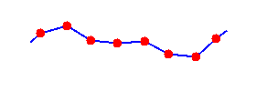 |
NOTA:
|
Aunque estas secuencias de movimiento se han creado para el robot Cube Revolutions, en el que las articulaciones se mueven perpendicularmente al suelo, serían válidas para un robot tipo serpiente en el que las articulaciones se muevan paralelamente al suelo o incluso para robots tipo anguila, que se desplacen por el agua. |